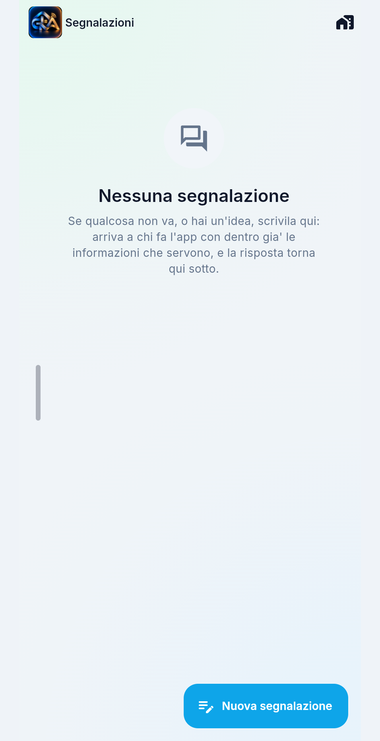
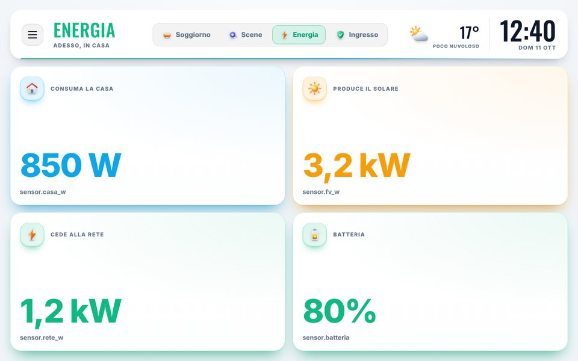

Presto Le app arrivano su Google Play e App Store
La tua casa in una plancia. Anche fuori casa.
Home Assistant sul telefono, sul tablet a muro, al polso e in auto. Si abbina con un QR code, e sul router non si apre niente.
- 30
- sezioni della plancia
- 0
- porte aperte sul router
- 1
- QR code per abbinare
- 14
- giorni di Premium gratis
Una plancia vera. Non un elenco di interruttori.
L'app non ridisegna la casa a modo suo: mostra la plancia che l'add-on mette in Home Assistant, con le sue schede, le sue finestre e la sua configurazione. Quello che vedi qui è quello che trovi installandola.



Luci Clima Antifurto Telecamere Energia Batterie Finestre Tapparelle Agenda Elettrodomestici Animali Piante Acqua e gas Rifiuti Auto e moto Le tue sezioni e altre, trenta in tutto
Una casa, ogni schermo.
gdahome è l'app per Android e iPhone, e si apre anche dal browser. La stessa casa ti segue dal telefono al muro, al polso, all'auto.

Sul telefono
Tutto quello che in Home Assistant si cerca.
- Dispositivi: tutte le entità per dominio, con i comandi.
- Zigbee: abbini un dispositivo e rispondi a «Dove lo metto?».
- Più case: quella dei genitori, quella al mare. Fino a dieci, a un tocco.
- Aggiornamenti e segnalazioni, con foto, video e una chat di assistenza.
A muro · Premium
Una plancia fatta per il muro.
Un tablet fisso o un NSPanel mostra una schermata sola coi comandi grandi: stanza, scene, ingresso, luci, clima, tapparelle, telecamere, energia. Li prende dalla plancia principale, e cambia nell'istante in cui cambia la casa.




Al polso · Premium
Il cancello, dal polso.
Su Apple Watch e Wear OS: i comandi rapidi, i dispositivi, chi è in casa e, in guida, la prossima svolta di gdanav. L'orologio non parla mai con la casa: lo fa il telefono per lui.
Anche in auto, su Android Auto e CarPlay, e nel browser su webapp.gdahome.org.
È la casa a chiamare fuori.
Nessuna porta da aprire, nessun indirizzo pubblico, nessuna VPN. L'add-on apre un collegamento verso il centralino e lo tiene aperto; i telefoni arrivano da quella parte.
- Installi l'add-on Dal negozio di Home Assistant, come ogni altro add-on. Ti mostra un QR code.
- Inquadri il codice Oppure lo scrivi: sedici caratteri in quattro gruppi. Il telefono riceve una credenziale sua, revocabile con un tasto.
- Sei dentro In casa va dritto all'add-on. Da fuori, con Premium, passa dal centralino, cifrato punta a punta.
- Il centralino non legge niente Telefono e casa si scambiano le chiavi passando da lui, e da lì in poi è tutto cifrato. Una prova automatica lo controlla a ogni modifica.
- Le credenziali restano in casa Il token di Home Assistant non esce mai dall'add-on: né la pagina né il telefono lo vedono.
- Tre strade, una casa L'app le prova tutte insieme e tiene la prima che risponde, di nuovo a ogni riconnessione.
gdanav, il navigatore per l'auto elettrica.
Ti porta a destinazione con la voce, ti avvisa di code, polizia e autovelox, e con l'auto elettrica ti dice dove fermarti e con quanta batteria arrivi. Va bene anche per la termica. Sta dentro gdahome, ed esiste anche come app a sé.


Elettrica. Il consumo si calcola tratto per tratto: velocità, salite, vento, temperatura, clima. Se la batteria non basta ti dice dove fermarti e quanto caricare, con le colonnine libere o occupate in quel momento.
In auto e a casa. Con Android Auto e CarPlay è tutto sullo schermo dell'auto. Con Home Assistant la batteria si legge dalla casa, e la casa è a un tasto: il cancello, il portone, «sto arrivando».
Gratis per cominciare.
Base è gratis e non scade. Premium è della casa, non del telefono: tutti i telefoni abbinati, e l'app dal browser, sono Premium insieme a lei. Nessun account, nessuna pubblicità, niente di tuo da vendere.
| Cosa | Base gratis | Premium 4,99 €/mese · 49,99 €/anno primi 14 giorni gratis |
|---|---|---|
| Plance | la principale | fino a 30 per casa |
| Case | 1 | fino a 10 |
| Dove funziona | sul Wi-Fi di casa | ovunque, cifrato punta a punta |
| Configurazione e Zigbee dall'app | – | ✓ |
| Plancia a muro | – | tablet e NSPanel, fino a 8 pagine |
| Al polso e in auto | – | Apple Watch, Wear OS, Android Auto, CarPlay |
| gdanav | gratis: termica completa, elettrica con la batteria scritta a mano | Premium compreso |
| Segnalazioni e chat di assistenza | ✓ | ✓ |
Si disdice dal Play Store o dall'App Store; se Premium finisce, la casa torna Base e le plance in più restano salvate. Da solo, gdanav Premium costa 2,99 € al mese o 29,99 € all'anno.
Tre modi per avere Premium
Dall'app, con Google Play o l'App Store. Con un codice regalo come GDA-XXXX-XXXX-XXXX, scritto nell'app o nell'add-on. Da chi ti ha fatto l'impianto, che lo assegna alla tua casa: tu non devi fare niente.
Per sapere se una casa è Premium, l'add-on manda solo l'identificativo della casa e il suo segreto: niente nomi, dispositivi o posizione. Il pagamento lo gestiscono Google e Apple. Informativa


Per chi installa.
Ogni casa che segui manda un rapporto al minuto, e una pagina sola ti dice quali hanno bisogno di qualcosa. Da lì installi gli aggiornamenti, riavvii, configuri la plancia e dai ai clienti le loro licenze Premium.
Cosa vedi
- Come sta ogni casa: plancia, telefoni, collegamenti, backup, batterie
- La macchina: processore, memoria, disco, temperatura
- Il tuo pacchetto di licenze, e i codici regalo
Cosa non vedi
- La plancia del cliente: non esiste un comando per entrarci
- Stanze, persone, telecamere: ricevi numeri, non nomi
Ogni azione solo dove il cliente l'ha permessa, con tre interruttori nell'add-on, spenti di serie.
Cinque minuti, la prima volta.
Prima l'add-on in Home Assistant, poi l'app. Dopo, gli aggiornamenti arrivano da soli.
-
L'add-on
In Home Assistant: Impostazioni → Add-on → Negozio → Archivi, e incolla:
https://github.com/danigio15/gdahomeappServe Home Assistant OS o Supervised: su Container il negozio degli add-on non c'è.
Come si installa → -
L'app
Su Android dal Play Store, su iPhone e iPad dall'App Store. La apri e inquadri il QR code che mostra l'add-on.
Play Store → -
Oppure il browser
La stessa app senza installare niente: la apri e la abbini digitando il codice.
Aprila →
Il codice è pubblico: add-on, centralino, app e le prove che girano a ogni modifica. La repository → Com'è fatto il centralino →
Sostienilo, se ti va.
Il sostegno non sblocca niente e non diventa uno sconto. Va in correzioni più rapide e prove su dispositivi veri, e tiene in piedi Base per chi non paga.
Scrivici. Risponde una persona.
Se gdahome è già in casa tua, fai prima con la chat di assistenza dentro l'app: arriva con la versione e lo stato del collegamento. Per tutto il resto c'è questo modulo, che arriva a assistenza@gdahome.org.